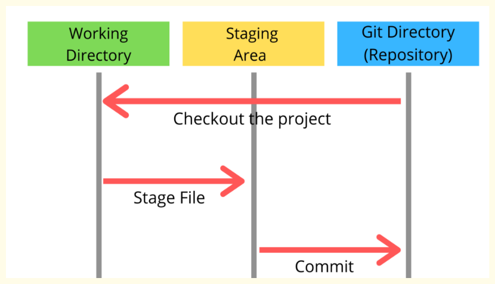

Git
Git is a Version Control System (VCS), specifically a distributed Version Control System, that was created by Linus Torvalds in 2005. It serves as a tool to manage and track changes in code over time, allowing developers to create "snapshots" or versions of their project. This enables capabilities like rewinding to previous states, fast-forwarding, and critically, facilitates teams working collaboratively on the same codebase without overwriting each other's work. Today, Git has become the de facto standard for developers, with 93% of them reportedly using it. It's important to distinguish Git itself from hosting services like GitHub, GitLab, or Bitbucket; these platforms utilize Git but are not Git inherently.

To effectively manage code, Git operates across three primary zones or stages on your local machine: the working directory, the staging area, and the local repository.
- The working directory is where you actively write code, fix bugs, and make changes to your files. When you're using an Integrated Development Environment (IDE) like VS Code, you're working within this directory, which is simply your local project folder. At this stage, Git is passively tracking what's happening but has not yet "remembered" any of your changes.
- The staging area, also referred to as the index or a "waiting room" or "shopping cart" for changes, is the intermediate step. When you execute the
git addcommand on a file, you are taking changes from your working directory and placing them into this area, explicitly telling Git that you intend to include these specific changes in the next snapshot. This allows you to handpick exactly what changes go into each commit, giving you fine-grained control and helping to keep your commit history clean. It also functions as a safety net, enabling you to review what you're about to commit usinggit statusorgit diffbefore making it permanent. - The local repository is where Git permanently saves the snapshots of your project's history on your computer. This is housed within a hidden
.gitfolder in your project directory. When you rungit commitwith a message, Git takes all the changes currently in the staging area and records them as a commit in your local repository. Each commit acts like a checkpoint in time, allowing you to always revert to it. Git stores an entire snapshot of files at a per-commit level, but it does so efficiently by only storing new or changed file content and pointing to existing unchanged file content, which contributes to its efficiency. Git objects like Blobs (for files) and Trees (for directories) are used internally to manage this data. Thegit logcommand helps you view this commit history.
The full local Git workflow typically involves you editing files in your working directory, then staging them with git add, and finally committing them with git commit to your local repository. If you need to temporarily set aside changes without committing, git stash can move them out of the working directory onto a stack.
Beyond your local machine, there's the remote repository, which can be thought of as the cloud version of your codebase, serving as a central hub for team collaboration. Services like GitHub, GitLab, or Bitbucket host these remote repositories. After making commits in your local repository, you use git push to upload those local commits to a designated remote branch, making them visible to your team. Conversely, to incorporate updates from your teammates, you use git pull, which effectively fetches new changes from the remote and merges them into your local copy. The git fetch command specifically downloads commits and references without merging, updating remote-tracking branches (e.g., origin/main) in your local repository. The origin remote is conventionally set up automatically when you clone a repository, pointing back to the source you cloned from.
Branching and Merging Strategies#
A branch in Git is simply a pointer to a commit, making branches lightweight and inexpensive to create. This feature is fundamental to Git workflows, allowing developers to work on new features or bug fixes in isolation. The git switch command (or the older git checkout) allows you to move between different branches, effectively updating your working directory to reflect the state of that branch.
When independent changes are made on different branches that originated from a common point, those branches are said to be diverging. To bring these changes together, Git provides two primary mechanisms: merging and rebasing.
Merging combines the history from one branch into another. Git first identifies the merge base, which is the nearest common ancestor commit of the two branches. It then integrates the changes from both branches, creating a new commit called a merge commit. A merge commit is unique because it has two parents, representing the tips of the two merged branches. While merging preserves the true history of the project, showing where branches diverged and merged, it can lead to many merge commits, which might make the history harder to read. A fast-forward merge occurs when there is no diverging history on the target branch; Git simply moves the pointer of the target branch forward to the tip of the merged branch without creating a new merge commit.
Rebasing, in contrast to merging, rewrites history. When you rebase one branch onto another (e.g., feature onto main), Git takes the commits from the feature branch, moves them back to their common ancestor, and then "replays" them one by one on top of the latest commit of the main branch. This creates new commit objects for the replayed changes, resulting in a linear history that can be easier to read and manage, especially for preparing pull requests. However, you should never rebase a public branch like main, as this rewrites history that others may have already pulled, leading to significant synchronization issues and conflicts for collaborators. Rebasing your own private branches onto a public one is generally acceptable.
Handling Conflicts#
Conflicts arise when Git attempts to combine changes (during a merge or rebase) where the same lines of code have been modified differently in the diverging branches, and Git cannot automatically decide which change to keep.
Git will insert conflict markers (<<<<<<<, =======, >>>>>>>) into the affected files. To resolve these, you must manually edit the file to remove the markers and choose the desired code. After resolving, you must git add the file to stage the resolution, and then either git commit (for a merge) or git rebase --continue (for a rebase) to finalize the process.
The git checkout --ours and git checkout --theirs commands can assist in conflict resolution by picking changes from either the current branch (ours in a merge) or the branch being merged/rebased (theirs in a merge, but ours during rebase refers to the target branch and theirs to the branch being replayed). For recurring conflicts, the git rerere (reuse recorded resolution) feature, if enabled, can remember how you resolved a specific conflict hunk and automatically resolve it the next time it appears.
Undoing Changes#
Git offers several powerful commands for undoing changes:
git reset: This command is used to undo recent commits or changes in the index (staging area) or working tree.git reset --soft <commit>: Moves the branch pointer back to the specified commit but keeps all changes from the undone commits as staged changes in your staging area, leaving your working directory untouched. This is useful for redoing a commit or fixing its message before pushing.git reset --hard <commit>: Moves the branch pointer back to the specified commit and discards all changes in both the staging area and the working directory that were made after that commit. All uncommitted or staged changes are permanently lost from your working files, though the commit objects themselves may still be recoverable usinggit reflog. Untracked files are not removed bygit reset --hard.
git revert <commit>: Instead of erasing history,git revertundoes the changes introduced by a specific commit by creating a new commit that is the inverse of the commit being reverted. This preserves the project's history, showing both the original commit and the subsequent commit that undid its effects.git reflog: This is an extremely useful command that keeps a record of where yourHEAD(your current position in history) has been. It allows you to recover commits or states that might seem lost after actions like hard resets, rebases, or accidental branch deletions, because the underlying commit objects are still referenced in the reflog.git commit --amend: This command allows you to change the message of your last commit. You can also stage additional changes before runninggit commit --amendto incorporate them into the previous commit. Be cautious: this command rewrites history by changing the SHA hash of the last commit, so do not amend commits that have already been pushed to a public branch.
Remote Collaboration Features (Hosting Services)#
While Git is the underlying VCS, many collaborative features are provided by hosting services like GitHub:
- Forking: This is a feature offered by hosting services, not a core Git command. A fork creates a personal copy of an original repository under your own account, allowing you to modify the project without directly affecting the original. This is the standard method for contributing to open-source projects. When working with forks, it's common to add a second remote, typically named
upstream, pointing to the original repository to easily pull in its latest changes. - Pull Request (PR): Also a feature of hosting services, a pull request is a mechanism to propose changes from one branch (often a feature branch on your fork) to another (e.g.,
mainon the original repository). PRs facilitate discussion and code review before changes are merged into the main codebase.
Ignoring Files#
The .gitignore file is crucial for telling Git which files or patterns of files it should ignore and not track. This is commonly used for generated files (like build outputs), log files, or dependency directories (node_modules/). You can place .gitignore files at the root of your repository or in subdirectories, and their rules apply to that directory and its subdirectories. The file supports standard shell wildcards, anchored patterns, and negation rules.
Advanced Git Commands#
git stash: Temporarily saves changes in your working directory and staging area without committing them, allowing you to switch to a clean working state.git stash listshows stashes,git stash popapplies and removes the most recent, andgit stash dropremoves a stash.git squash: Not a standalone command, but an action typically performed usinggit rebase -i(interactive rebase). It allows you to combine multiple commits into a single, cleaner commit, often used before merging a feature branch to streamline history.git cherry-pick: Applies the changes introduced by a specific commit from one branch onto another branch by creating a new commit on the target branch with those changes. It requires a clean working tree.git bisect: A debugging tool that uses a binary search algorithm to efficiently find the specific commit that introduced a bug. You mark commits as "good" (bug not present) or "bad" (bug present), and Git iteratively checks out commits in the middle of the range until the culprit is found.git worktree: Allows you to have multiple working directories linked to the same repository, with each worktree potentially having a different branch checked out simultaneously. You cannot work on a branch that is already checked out by another worktree.git tag: Used to mark specific points in history as important, such as release versions (e.g., v1.0.0). A tag is an immutable pointer to a commit. When yougit checkouta tag, you enter a "detached HEAD" state, meaning you cannot commit directly to it.
Popular Branching Strategies#
Understanding different branching strategies is key for team collaboration:
- Feature Branching: This is a straightforward approach where for each new feature or bug fix, a dedicated branch is created off the
mainbranch. All work for that feature happens on this isolated branch, and once complete and tested, it's merged back intomain, often via a pull request. The core idea is that themainbranch always contains production-ready code, keeping incomplete work separated. This is extremely common and forms the basis for many workflows, including those on GitHub. While it scales well and allows multiple developers to work without interfering, it requires eventual integration, which can lead to merge conflicts ifmainhas diverged significantly. Regularly updating feature branches frommaincan mitigate this. - Gitflow: A more structured and complex model suited for projects with regular release cycles and multiple versions to maintain. Gitflow introduces specific long-lived branches for different purposes: a
masterormainbranch for production code (where each commit is a release), and adevelopbranch where integration of the latest development changes occurs. Feature branches are created fromdevelopand merged back into it. Release branches are used to prepare new versions, branching offdevelopfor final polish and bug fixes, and then merged into bothmaster(for release) anddevelop(to incorporate fixes into ongoing development). Hotfix branches are for quickly addressing critical issues found in production, branching offmasterand merging back into bothmasteranddevelop. While robust for large, structured projects, its complexity can be overkill for smaller teams or continuous development environments. - GitHub Flow: A lightweight and simpler workflow popularized by GitHub, commonly seen in open-source projects. It centers around one main branch (often called
main) that is always deployable. For any new work, a short-lived feature branch is created directly offmain, work is done on it, and then a pull request (PR) is opened to merge it back intomain. Code review and automated tests happen during the PR process. There are no dedicateddeveloporreleasebranches, simplifying the process. If a critical bug arises, a quick fix branch is made frommain. This flow is ideal for smaller teams and emphasizes simplicity and speed. - GitLab Flow: This is a hybrid model that combines the simplicity of GitHub Flow with the idea of environment-specific or release branches. Like GitHub Flow, feature branches are often developed off
mainand merged back intomainwhen ready, with the code inmainconsidered deployable. However, GitLab Flow suggests using environment branches (e.g.,staging,production) or tags to manage deployments to different environments. After merging features intomain, code might be deployed to staging by mergingmainintostaging, and then to production by mergingmainintoproductionor deploying a tagged release. This provides more structure for teams with multiple deployment targets, clearly defining which commit is on which environment. While more complex than GitHub Flow, it's less heavy than Gitflow and is often adopted by teams using GitLab CI/CD pipelines. - Trunk-Based Development (TBD): This strategy prioritizes simplicity and continuous integration, relying on a single, long-lived branch, usually called
trunkormain. Developers commit to this main branch directly or via very short-lived branches, ideally merging back daily or multiple times a day. The "trunk" signifies it as the single source of truth where all work quickly lands. This approach minimizes large merge conflicts, as changes are incremental and integration delays are reduced. New features are often hidden behind feature flags, meaning incomplete code can be merged intomainbut disabled in production, ensuring the codebase is always deployable. TBD is the foundation for modern DevOps, enabling rapid integration and deployment (e.g., 100 deployments a day) and is enforced by large tech companies like Google, Meta, and Amazon to keep vast codebases clean and moving. This strategy is preferred by large tech companies aiming for rapid integration and deployment.